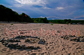
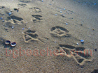
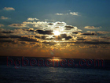
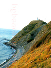
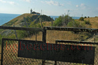
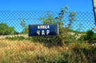
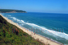
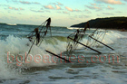
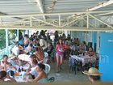
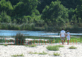

Плаж Irakli and Emona - Пътеводител
За Irakli and Emona
Irakli and Emona е дестинация по българското Черноморие. Това място предлага пясъчен плаж, летни удобства, което го прави идеално за плажни туристи, семейства. Българското Черноморие простира на 378 километра и Irakli and Emona има своя уникален характер и атракции.
Какво да очаквате
Плажът в Irakli_and_Emona запазва естествен вид с ограничена инфраструктура. Пясъкът е естествен, без редове от шезлонги и масов туризъм. Водата е чиста, а атмосферата е спокойна и релаксираща. Заведенията за храна са ограничени и семейни. Това е място за тези, които ценят тишината и природата над удобствата.
Как да стигнете и практична информация
Достъпът до Irakli_and_Emona може да изисква собствен транспорт, тъй като обществените връзки са ограничени. Настаняването е предимно в малки семейни хотели и къщи за гости (40-80 лв/нощувка). Препоръчва се да носите необходимото, тъй като магазините и услугите може да са ограничени.
Близки атракции
Освен плажа, посетителите могат да разгледат околните забележителности. Българският бряг съчетава природна красота с исторически места, традиционни села и възможности за туризъм, водни спортове и културни преживявания.
Най-добро време за посещение
Юни и септември предлагат отлично време с по-малко туристи и по-добри цени в сравнение с пиковите юли-август. Водата е достатъчно топла за комфортно плуване от средата на юни до средата на септември. За най-тихото преживяване и най-добра стойност, помислете за края на май или началото на октомври.
Съвети за посетители
Фотогалерия
Разгледайте нашата колекция от снимки от Irakli and Emona, показващи плажа, съоръженията и атмосферата. Тези автентични изображения ви помагат да разберете какво да очаквате и да планирате посещението си ефективно.
Изкуство- 
Сърце
Вълни
Изглед към плажа на Иракли
На зазоряване
Забава
Изобретение
Яхта
Скулптура от камък
Врабчета
Спокойствие
Рай
Птици
Ято птици- 
Следи от птици
Екектричество- 
Изгрев
Опасен терен- 
Скали
Друга снимка на изгрев
Изгрев от Иракли
Камъни
Мравки
Емона
Ком-Емине
Нос Емине
Граница
Контраст
Фар- 
Забранено влизането
Село Емона- 
Улица Чар
Поглед от гората на Иракли
Панорама- 
Поглед отгоре
Палатки
Охраняема зона- 
Чадъри в морето - 
Бара на Иракли
През деня в Иракли
Чадърите на плажа
Бар на плажа
На плажа след парти
На бара
Край на охраняемата зона- 
Река Вая
Морски шепот
Cafe del mar
На брега
Крайбрежието на Иракли
Граница
Пясък
Нудистка
Скандален проект